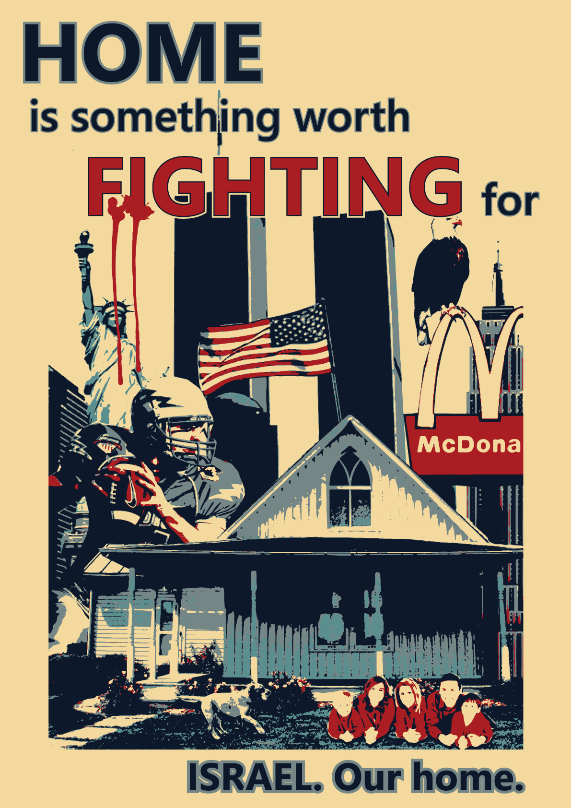
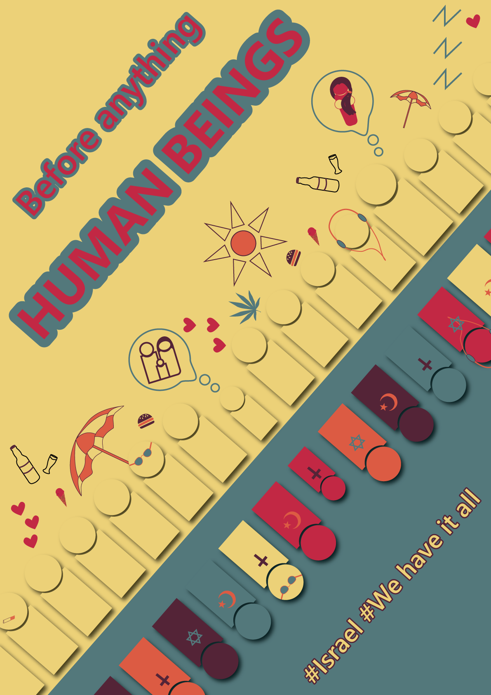

פוסטרים לשיפור תדמיתה של ישראל
פוסטר שנועד לשינוי עמדה
פוסטר להצגת ישראל באור חיובי
הסבר אודות העבודה:
הפוסטרים עוצבו במסגרת פרוייקט שמטרתו להראות צד אחר של ישראל.
הפוסטרים מיועדים לקהל של סטודנטים אמריקנים שדעתם על ישראל שלילית.
מטרתו של הפוסטר הימיני היא לפנות לרגש ולהעביר מסר לפיו זה לגיטימי להילחם על הבית.
מטרתו של הפוסטר השמאלי היא להראות שבישראל חיים קודם כל בני אדם רגילים.
העבודה נעשתה בעזרת התוכנות Photoshop ו- Illustrator.